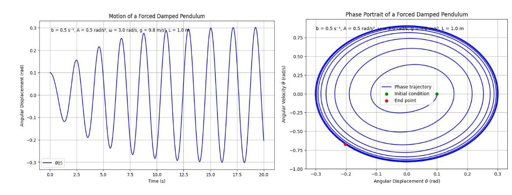
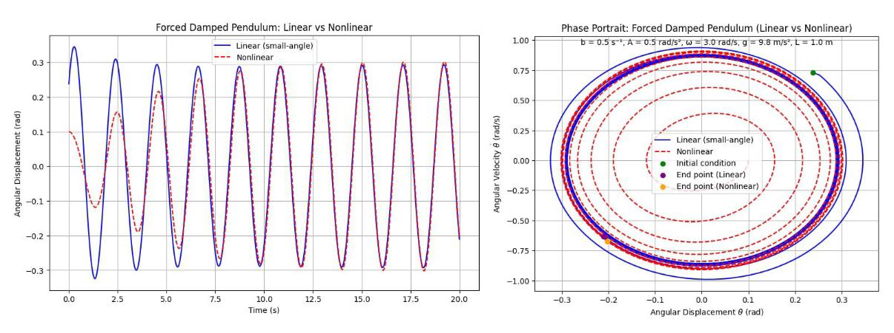
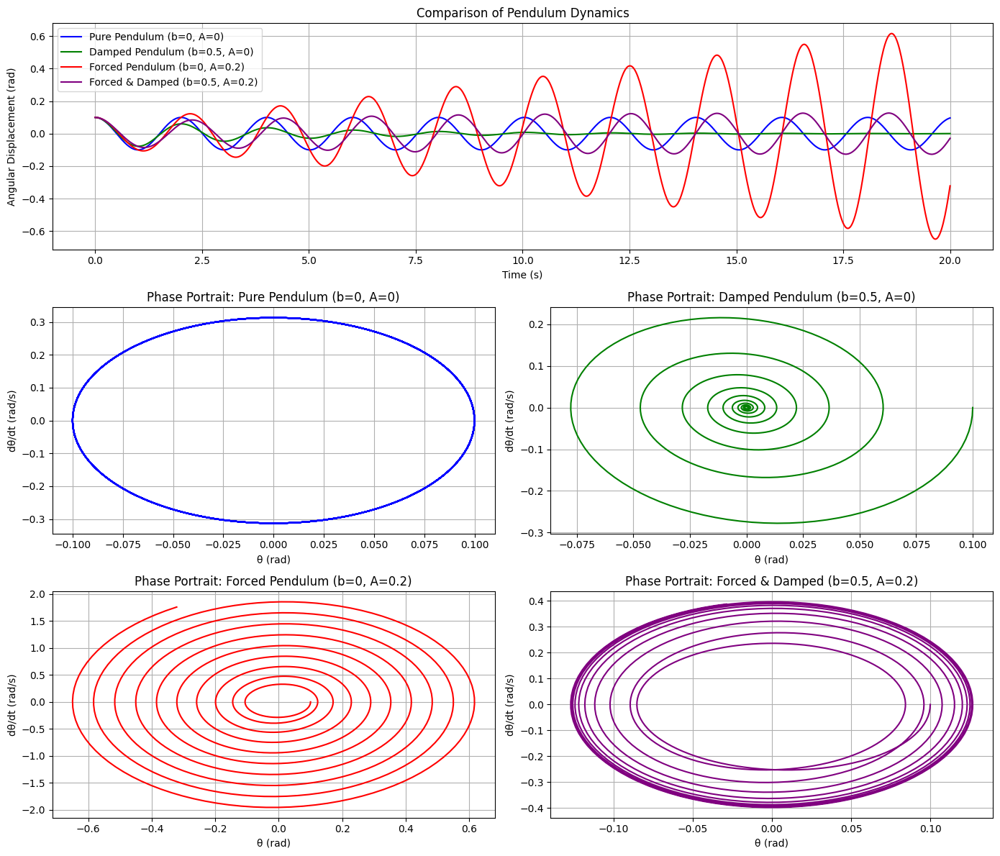
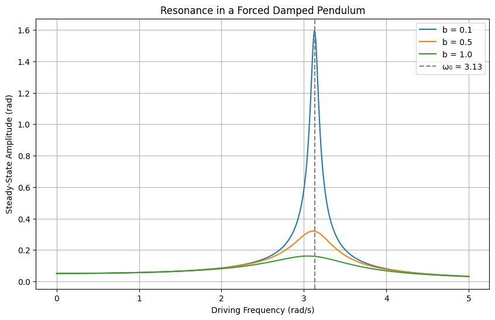
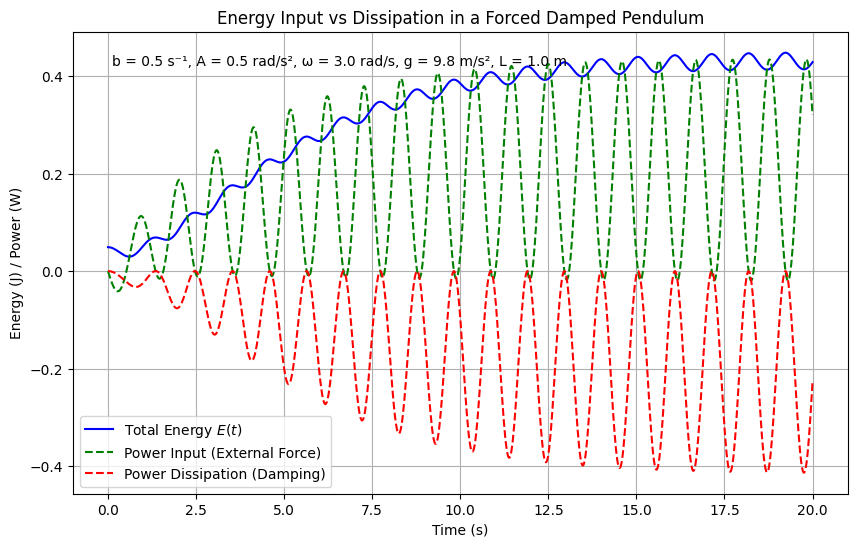
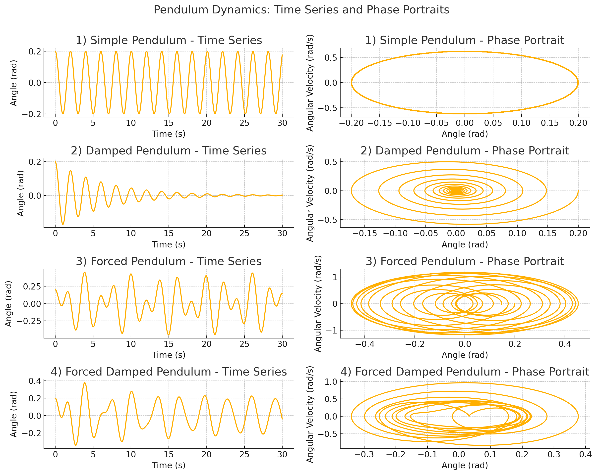

Problem 2
Investigating the Dynamics of a Forced Damped Pendulum
Start with the Differential Equation
The given equation for the motion of a forced damped pendulum is:
Here's what each term represents:
- \(\theta\): The angular displacement of the pendulum from the vertical (in radians).
- \(\frac{d^2\theta}{dt^2}\): The angular acceleration.
- \(b \frac{d\theta}{dt}\): The damping term, where \(b\) is the damping coefficient (friction or resistance).
- \(\frac{g}{L} \sin\theta\): The gravitational restoring force, where \(g\) is the acceleration due to gravity, \(L\) is the length of the pendulum, and \(\sin\theta\) accounts for the nonlinear restoring force.
- \(A \cos(\omega t)\): The external forcing term, with amplitude \(A\) and angular frequency \(\omega\).

Derive the Approximate Solutions for Small-Angle Oscillations
For small angles, approximate \(\sin\theta \approx \theta\). The given equation:
becomes a linear equation:
where \(\omega_0 = \sqrt{\frac{g}{L}}\) is the natural frequency.
Solving the Equation
The solution is the sum of the homogeneous (\(\theta_h\)) and particular (\(\theta_p\)) solutions.
Homogeneous Solution
Solve the homogeneous part: \(\ddot{\theta} + b \dot{\theta} + \omega_0^2 \theta = 0\). The characteristic equation is \(r^2 + b r + \omega_0^2 = 0\), with roots \(r = \frac{-b \pm \sqrt{b^2 - 4\omega_0^2}}{2}\). For the underdamped case (\(b^2 < 4\omega_0^2\)), the solution is:
where \(\omega_d = \sqrt{\omega_0^2 - \frac{b^2}{4}}\). This part decays over time due to damping.
Particular Solution
For the forcing term \(A \cos(\omega t)\), assume \(\theta_p(t) = B \cos(\omega t) + C \sin(\omega t)\). Substitute into the equation, equate coefficients of \(\cos(\omega t)\) and \(\sin(\omega t)\), and solve:
Solving gives:
Rewrite as \(\theta_p(t) = D \cos(\omega t - \phi)\), where:
General Solution
The full solution is:
The homogeneous part decays, leaving the steady-state solution \(\theta_p(t)\).

This plot directly visualizes derived solution, showing the transient (decaying) and steady-state (oscillatory) components.
3. Comparison of Pendulum Scenarios
- The plot compares their time evolution numerically, using the full nonlinear equation for accuracy.

The time plot (top) shows: (1) the pure pendulum oscillates with constant amplitude, (2) the damped pendulum decays exponentially, (3) the forced pendulum exhibits sustained resonance, and (4) the forced damped case settles into a steady-state oscillation after transient decay. The phase portraits (bottom) reveal: (1) a closed orbit for the pure pendulum, indicating energy conservation; (2) a spiral to the origin for the damped case, showing energy dissipation; (3) a larger repeating orbit for the forced case, driven by external energy; and (4) a transition to a limit cycle for the forced damped case, balancing input and dissipation.
Resonance and Energy in a Forced Damped Pendulum
In a forced damped pendulum (small-angle approximation), resonance governs long-term behavior and energy dynamics.
Resonance Condition
Resonance arises when the driving frequency \(\omega\) matches the natural frequency \(\omega_0\) of the undamped system:
In a damped system, the peak response occurs slightly below the natural frequency:
Amplitude at Resonance
The amplitude \(D(\omega)\) of the steady-state oscillation is:
At resonance:
Lower damping (\(b\) small) → Higher amplitude near resonance.

Energy Implications
1. Energy Input vs Dissipation
- The external force supplies energy continuously.
- Damping dissipates it (e.g., via friction).
- In steady state, energy input equals energy loss.
2. Energy Stored in Oscillations
Total energy (approximate):
Substitute \(\theta(t) = D \cos(\omega t - \phi)\):
Average energy over a period \(T = \frac{2\pi}{\omega}\):
→ Maximum average energy occurs near resonance, where \(D\) is largest.

Practical Impacts
- Large oscillations near resonance can be dangerous (e.g., bridges, machines).
- Engineers use controlled damping to:
- Avoid resonance disasters
- Tune systems that benefit from resonance (e.g., musical instruments).
Summary
- Resonance: \(\omega \approx \omega_0\)
- At resonance:
- Amplitude and average energy peak
- Risk increases if damping is too low
- In steady state:
- Energy in = Energy out
